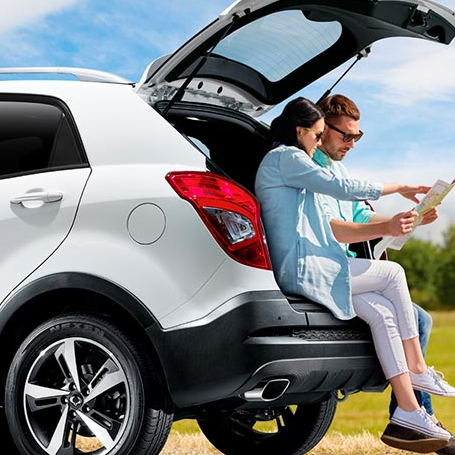
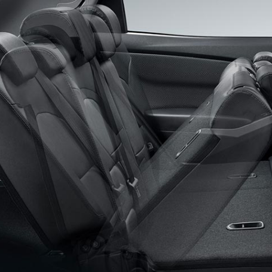

Galería de imágenes





Subchasis completo delantero y trasero reforzado que incrementa la seguridad vehicular, resistiendo la deformación frente a una colisión, absorbe la vibración de la superficie del camino, mejorando la estabilidad vehicular.
A las 1.500 revoluciones el motor genera el 80% de su fuerza. Haciendo de Korando una camioneta con un excelente desempeño.
Emplea una combinación de intervención del acelerador y frenado en cada rueda para ayudar a mantener mayor estabilidad sobre todo tipo de superficies y prevención de accidentes.
Realza la sensación de comodidad en sus ocupantes, además, es un vehículo pensado también los pasajeros traseros, dándoles la posibilidad de reclinar sus sillas e ir mucho mas cómodos.
Resaltan la imagen delantera y trasera de la camioneta.